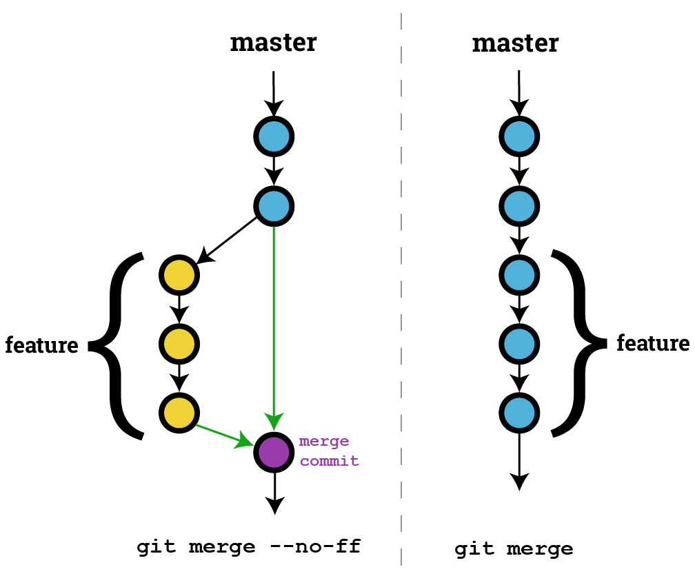
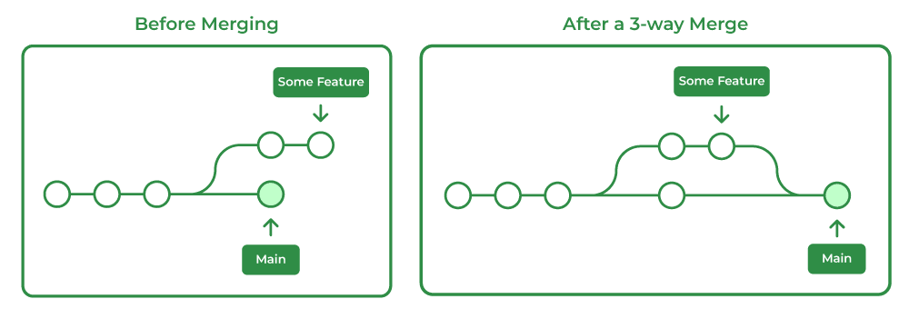

Capítulo 5 Ramas
En esta seccion aprenderemos a emplear las Ramas: crear, movernos entre ramas, unir ramas, entre otras funcionalidades. Primero hay que saber lo que es una rama en Git.
Rama (Branch): Una rama en Git es una versión paralela del proyecto, permitiendo trabajar en desarrollo o características sin afectar la rama principal.

Podemos ver a las ramas como lineas donde la rama main/master es la linea central, mientras que las ramas que se desprenden de esta avanzan de forma paraalela a la principal, lo que permite tomar caminos distintos sin alterar la historia principal.
Retomando el ejemplo de un videojuego, podemos considerar a las ramas como las misiones secundarias que no alteran la historia principal pero que pueden ayudar a mejorar a nuestro personaje para que al volver a la historia principal contemos con más herramientas y experiencia de la que tendríamos solo siguiendo la historia central; el uso de las ramas en Git nos permite tomar caminos distintos sin alterar la linea central, lo que permite experimentar con nuevas implementaciones con la seguridad de poder volver a la rama principal que no ha sido alterada por los cambios realizados.
Como parte del uso de las ramas, contamos con la posibiliad de tomar los cambios realizados en una rama y llevarlos a la rama principal, por ejemplo en caso de haber terminado una implmentación, podemos llevar todo ese trabajo a la rama main/master para incluir dicha implementación, esto se a través de merge.
Merge: Un merge en Git es el proceso de combinar cambios de diferentes ramas en una sola rama.

Este proceso se puede realizar de distintas maneras:
- Fast-forward: Un fast-forward en Git es una fusión en la que la rama de destino avanza directamente al nuevo commit sin crear un commit de fusión.

- Unión automática (Automatic merge): Una unión automática en Git es cuando Git fusiona automáticamente cambios de diferentes ramas sin conflictos manuales.

- Unión manual (Manual merge): Una unión manual en Git ocurre cuando se requieren resoluciones de conflictos por parte del usuario durante el proceso de fusión entre ramas.
Es evidente que las el uso de las ramas es muy útil en el desarrollo de cualquier proyecto, pues nos permite hacer nuevas implementaciones y/o cambios en el código sin afectar la rama principal del repositorio.
5.1 Merge: Fast-forward
Seguiremos trabajando con el material material-numerosasi que nos colocaremos desde la terminal en la ubicacion del material y seguiremos las siguientes instrucciones:
- Para listar las ramas que tenemos en el repositorio emplearemos:
- Ahora solo contamos con la rama principal, por lo que crearemos una nueva rama, lo que vamos a implementar ahora es un conjunto números distinto a los que ya tenemos por lo que crearemos una rama llamade
numeros-2, esto lo haremos empleando:
Si volvemos a listar las ramas, encontraremos esta nueva rama que acabamos de crear:
Aquí podemos notar que Git nos indica la rama en la que nos encontramos a través de un asterisco * que precede al nombre de la rama sobre la que nos ubicamos, en este caso la rama main
Como no queremos afectar a la rama main, vamos a cambiar a la rama que acabamos de crear:
Ahora, si listamos los cambios de nuestro repositorio, notaremos algo interesante:
* 62b4657 - (hace 8 minutos) .gitignore actualizado (extension .log) - [Nombre de usuario] (HEAD -> numeros-2, main)
* ae676b5 - (hace 10 minutos) .gitignore agregado - [Nombre de usuario]
* c32cdc0 - (hace 12 minutos) producto.md eliminado - [Nombre de usuario]
* 8d867e7 - (hace 15 minutos) suma.md renombrado~ - [Nombre de usuario]
* 8606014 - (hace 16 minutos) restriccion-division.md eliminado - [Nombre de usuario]
* f67c77c - (hace 17 minutos) division-cero.md renombrado - [Nombre de usuario]
* 3741b68 - (hace 22 minutos) division-cero.md agregado - [Nombre de usuario]
* 451e900 - (hace 2 horas) numeros imaginarios y complejos agregados - [Nombre de usuario]
* f0e5d47 - (hace 3 horas) operaciones/suma.md y operaciones/producto.md agregados - [Nombre de usuario]
* d610af4 - (hace 3 horas) problemas.md agregado - [Nombre de usuario]
* a54e313 - (hace 3 horas) caracteristicas.md agregado - [Nombre de usuario]
* 37d5a5b - (hace 3 horas) numeros.md agregado - [Nombre de usuario]
* a4356d4 - (hace 3 horas) README.md agregado - [Nombre de usuario]Además de aparecer los nuevos commits que realizamos, podemos notar que al final de la primer línea, tenemos (HEAD -> numeros-2, main), lo que nos indica que el último commit registrado por las ramas main y numeros-2 es el mimo, es decir que ambas estan en el mismo punto del repositorio, tambien podemos notar que no ha cambiado nada en los archivos o directorios.
- Procediendo a hacer modificaciones en el repositorio.
Vamos a crear un archivo de nombre:
Al que le agregaremos la siguiente entrada:
- Agregamos al Stage y hacemos un commit
[numeros-2 34238c5] numeros-2.md agregado
1 file changed, 7 insertions(+)
create mode 100644 numeros-2.md- Listamos los registros:
* 34238c5 - (hace 73 segundos) numeros-2.md agregado - [Nombre de usuario] (HEAD -> numeros-2)
* 62b4657 - (hace 10 minutos) .gitignore actualizado (extension .log) - [Nombre de usuario] (main)
* ae676b5 - (hace 12 minutos) .gitignore agregado - [Nombre de usuario]
* c32cdc0 - (hace 14 minutos) producto.md eliminado - [Nombre de usuario]
* 8d867e7 - (hace 17 minutos) suma.md renombrado~ - [Nombre de usuario]
* 8606014 - (hace 18 minutos) restriccion-division.md eliminado - [Nombre de usuario]
* f67c77c - (hace 19 minutos) division-cero.md renombrado - [Nombre de usuario]
* 3741b68 - (hace 24 minutos) division-cero.md agregado - [Nombre de usuario]
* 451e900 - (hace 2 horas) numeros imaginarios y complejos agregados - [Nombre de usuario]
* f0e5d47 - (hace 3 horas) operaciones/suma.md y operaciones/producto.md agregados - [Nombre de usuario]
* d610af4 - (hace 3 horas) problemas.md agregado - [Nombre de usuario]
* a54e313 - (hace 3 horas) caracteristicas.md agregado - [Nombre de usuario]
* 37d5a5b - (hace 3 horas) numeros.md agregado - [Nombre de usuario]
* a4356d4 - (hace 3 horas) README.md agregado - [Nombre de usuario]Podemos notar que la rama main se queda un commit por debajo de numeros-2, que ahora es el HEAD, esto porque los cambios que registramos solo afectan a la rama actual numeros-2.
- Agregaremos tambien las características de los números que acabamos de añadir:
Creamos un archivo de nombre:
Al que le agegaremos la siguiente entrada:
# Características de los números alternos
* Números naturales mayores que 1 que solo tienen dos divisores positivos: 1 y ellos mismos.
* Números naturales que son iguales a la suma de sus divisores propios positivos (excluyendo el propio número).
* Números reales que no son soluciones de ninguna ecuación algebraica con coeficientes racionales.
* Números que son soluciones de alguna ecuación algebraica con coeficientes enteros.- Agregamos al Stage y hacemos un commit
[numeros-2 01e1562] caracteristicas-2.md agregado
1 file changed, 7 insertions(+)
create mode 100644 caracteristicas-2.md- Listamos los registros:
* 01e1562 - (hace 25 segundos) caracteristicas-2.md agregado - [Nombre de usuario] (HEAD -> numeros-2)
* 34238c5 - (hace 73 segundos) numeros-2.md agregado - [Nombre de usuario]
* 62b4657 - (hace 13 minutos) .gitignore actualizado (extension .log) - [Nombre de usuario] (main)
* ae676b5 - (hace 15 minutos) .gitignore agregado - [Nombre de usuario]
* c32cdc0 - (hace 17 minutos) producto.md eliminado - [Nombre de usuario]
* 8d867e7 - (hace 20 minutos) suma.md renombrado~ - [Nombre de usuario]
* 8606014 - (hace 21 minutos) restriccion-division.md eliminado - [Nombre de usuario]
* f67c77c - (hace 22 minutos) division-cero.md renombrado - [Nombre de usuario]
* 3741b68 - (hace 27 minutos) division-cero.md agregado - [Nombre de usuario]
* 451e900 - (hace 2 horas) numeros imaginarios y complejos agregados - [Nombre de usuario]
* f0e5d47 - (hace 3 horas) operaciones/suma.md y operaciones/producto.md agregados - [Nombre de usuario]
* d610af4 - (hace 3 horas) problemas.md agregado - [Nombre de usuario]
* a54e313 - (hace 3 horas) caracteristicas.md agregado - [Nombre de usuario]
* 37d5a5b - (hace 3 horas) numeros.md agregado - [Nombre de usuario]
* a4356d4 - (hace 3 horas) README.md agregado - [Nombre de usuario]Ahora tenemos la rama numeros-2 dos commits por delante de main.
Lo que haremos a continuación es llevar estos cambios a la rama main.
- Nos colocamos en la rama a donde llevaremos los cambios, en este caso
main:
Notemos que los archivos y carpetas que creamos en la rama numeros-2 han desaparecido, esto es porque no hemos alterado la rama main.
- hacemos un
mergede la ramanumeros-2a la ramamain:
Actualizando 62b4657..01e1562
Fast-forward
caracteristicas-2.md | 7 +++++++
numeros-2.md | 7 +++++++
2 files changed, 14 insertions(+)
create mode 100644 caracteristicas-2.md
create mode 100644 numeros-2.mdEn esta salida podemos ver varias cosas:
- Se agregaron 2 entradas:
caracteristicas-2.mdynumeros-2.md - Nos marca que acabamos de realizar un Fast-forward
Este es el caso más idealpued en la rama main no se hicieron cambios antes de la union con la rama numerso-2.
Si revisamos los registros:
* 01e1562 - (hace 4 minuto) caracteristicas-2.md agregado - [Nombre de usuario] (HEAD -> main, numeros-2)
* 34238c5 - (hace 5 minutos) numeros-2.md agregado - [Nombre de usuario]
* 62b4657 - (hace 19 minutos) .gitignore actualizado (extension .log) - [Nombre de usuario]
* ae676b5 - (hace 21 minutos) .gitignore agregado - [Nombre de usuario]
* c32cdc0 - (hace 23 minutos) producto.md eliminado - [Nombre de usuario]
* 8d867e7 - (hace 26 minutos) suma.md renombrado~ - [Nombre de usuario]
* 8606014 - (hace 27 minutos) restriccion-division.md eliminado - [Nombre de usuario]
* f67c77c - (hace 28 minutos) division-cero.md renombrado - [Nombre de usuario]
* 3741b68 - (hace 30 minutos) division-cero.md agregado - [Nombre de usuario]
* 451e900 - (hace 2 horas) numeros imaginarios y complejos agregados - [Nombre de usuario]
* f0e5d47 - (hace 3 horas) operaciones/suma.md y operaciones/producto.md agregados - [Nombre de usuario]
* d610af4 - (hace 3 horas) problemas.md agregado - [Nombre de usuario]
* a54e313 - (hace 3 horas) caracteristicas.md agregado - [Nombre de usuario]
* 37d5a5b - (hace 3 horas) numeros.md agregado - [Nombre de usuario]
* a4356d4 - (hace 3 horas) README.md agregado - [Nombre de usuario]Vemos que la ramam main y la rama numeros-2 se encuentran en el mismo commit, lo que significa que ambas estan en el mismo punto o que estan actualizadas.
- Como ya no vamos a trabajar en la rama
numeros-2, la eliminaremos pues ya no tiene razón de existir, ya ha sido aprovechada.
Para eliminar la rama numeros-2 emplearemos:
En caso de que al hacer merge no hayamos unido el último commit de la rama numeros-2, puede salirnos un error, ya que hay commits sin mezclar; en este caso podemos forzar la acción de eliminar la rama, si es que así lo deseamos, con:
5.2 Merge: Unión automática
Continuamos trabajando con el material material-numerosasi que nos colocaremos desde la terminal en la ubicacion del material y seguiremos las siguientes instrucciones:
- Para crear una rama nueva y a la vez movernos a ella, emplearemos:
- Comprobamos que nos encontramos en la nueva rama
numeros-3
- Agregamos más elementos a
numeros-2.md:
4.Hacemos el commit correspondiente:
[numeros-3 5886d1b] numeros-2.md modificado (numeros abundantes agregados)
1 file changed, 1 insertion(+)- Agregamos la correspondiente caracteristica del elemento añadido en
caracteristicas-2.md:
- Hacemos el commit correspondiente:
[numeros-3 e26e013] caracteristicas-2 modificado (numeros abundantes agregados)
1 file changed, 1 insertion(+)- Por alguna razón externa debes retirar los numeros imaginarios y complejos en el proyecto. Para hacerlo primero hay que colocarnos en la rama
main:
- Una vez nos colocamos en la rama
main, elominamos todo rastro de los numeros imaginarios y complejos.
Luego hacemos el registro de los cambios realizados
- La implementación de
numeros abundantesya esta lista, por lo que vamos a unir las ramasmainynumeros-3:
Se abrirá el editor de texto con la sifuiente entrada:
Merge branch 'numeros-3'
# Por favor ingresa un mensaje de commit que explique por qué es necesaria esta fusión,
# especialmente si esto fusiona un upstream actualizado en una rama de tópico.
#
# Líneas comenzando con '#' serán ignoradas, y un mensaje vacío aborta
# el commit.Esta entrada la cambiaremos por la siguiente:
implementacion de numeros abundantes en rama 'numeros-3'
# Por favor ingresa un mensaje de commit que explique por qué es necesaria esta fusión,
# especialmente si esto fusiona un upstream actualizado en una rama de tópico.
#
# Líneas comenzando con '#' serán ignoradas, y un mensaje vacío aborta
# el commit.Al guardad los cmbios obtendremos una salida así:
Merge made by the 'ort' strategy.
caracteristicas-2.md | 1 +
numeros-2.md | 1 +
2 files changed, 2 insertions(+)- Revisamos los registros:
* bb296da - (hace 2 minutos) implementacion de numeros abundantes en rama 'numeros-3' - [Nombre de usuario] (HEAD -> main)
|\
| * e26e013 - (hace 8 minutos) caracteristicas-2 modificado (numeros abundantes agregados) - [Nombre de usuario] (numeros-3)
| * 5886d1b - (hace 10 minutos) numeros-2.md modificado (numeros abundantes agregados) - [Nombre de usuario]
* | 9556c19 - (hace 3 minutos) se retiran los numeros imaginarios y complejos - [Nombre de usuario]
|/
* 01e1562 - (hace 11 minuto) caracteristicas-2.md agregado - [Nombre de usuario]
* 34238c5 - (hace 12 minutos) numeros-2.md agregado - [Nombre de usuario]
* 62b4657 - (hace 18 minutos) .gitignore actualizado (extension .log) - [Nombre de usuario]
* ae676b5 - (hace 20 minutos) .gitignore agregado - [Nombre de usuario]
* c32cdc0 - (hace 22 minutos) producto.md eliminado - [Nombre de usuario]
* 8d867e7 - (hace 25 minutos) suma.md renombrado~ - [Nombre de usuario]
* 8606014 - (hace 26 minutos) restriccion-division.md eliminado - [Nombre de usuario]
* f67c77c - (hace 27 minutos) division-cero.md renombrado - [Nombre de usuario]
* 3741b68 - (hace 32 minutos) division-cero.md agregado - [Nombre de usuario]
* 451e900 - (hace 3 horas) numeros imaginarios y complejos agregados - [Nombre de usuario]
* f0e5d47 - (hace 4 horas) operaciones/suma.md y operaciones/producto.md agregados - [Nombre de usuario]
* d610af4 - (hace 4 horas) problemas.md agregado - [Nombre de usuario]
* a54e313 - (hace 4 horas) caracteristicas.md agregado - [Nombre de usuario]
* 37d5a5b - (hace 4 horas) numeros.md agregado - [Nombre de usuario]
* a4356d4 - (hace 4 horas) README.md agregado - [Nombre de usuario]Vemos que se nosmuestra de uma manera muy visual la separación y unión de las ramas main y numeros-3.
- Por último, eliminamos la rama
numeros-3
5.3 Merge: Uniones con conflictos
Esta vez vamos a generar un conflicto y al momendo de unir las ramas habrá que solucionarlo. Vamos a crear la rama numeros-4 siguiendo las indicaciones:
- Cambianso a la rama
numeros-3
- Vamos a editar el archivo
problemas.md, e el que nos encontramos el siguiente contenido:
# Problemas
* Restar
* Dividir
* No abarca todos los números de la recta real
* Sin cerradura en suma
* Raíces de negativosQue cambiaremos por el siguiente contenido:
# Problemas en los números
* Restar
* Dividir
* No abarca todos los números de la recta real
* Sin cerradura en suma
* Raíces de negativos
# Problemas en los números alternos
* La factorización de grandes números en sus factores primos.
* Se desconoce si existen infinitos números perfectos.
* Encontrar todas las soluciones algebraicas de una ecuación polinómica dada.
* Clasificar y encontrar patrones en los números abundantes.- Hacemos el commit:
[numeros-4 3447252] problemas.md modificado (numeros-2)
1 file changed, 9 insertions(+), 1 deletion(-)- Cambiamos a la rama
mainpara hacer modificaciones didtintas:
- Modificamos
problemas.mddejando el siguiente contenido:
# Problemas
* Restar
* Dividir
* No abarca todos los números de la recta real
* Sin cerradura en suma
* Raíces de negativos
* La factorización de grandes números en sus factores primos.
* Se desconoce si existen infinitos números perfectos.
* Encontrar todas las soluciones algebraicas de una ecuación polinómica dada.
* Clasificar y encontrar patrones en los números abundantes.- hacemos el registro:
- Verificamos el estado del repositorio
* 74aca37 - (hace 28 segundos) problemas.md modificado - [Nombre de usuario] (HEAD -> main)
| * 3447252 - (hace 3 minutos) problemas.md modificado (numeros-2) - [Nombre de usuario] (numeros-4)
|/
* bb296da - (hace 10 minutos) implementacion de numeros abundantes en rama 'numeros-3' - [Nombre de usuario]
|\
| * e26e013 - (hace 16 minutos) caracteristicas-2 modificado (numeros abundantes agregados) - [Nombre de usuario] (numeros-3)
| * 5886d1b - (hace 18 minutos) numeros-2.md modificado (numeros abundantes agregados) - [Nombre de usuario]
* | 9556c19 - (hace 11 minutos) se retiran los numeros imaginarios y complejos - [Nombre de usuario]
|/
* 01e1562 - (hace 19 minuto) caracteristicas-2.md agregado - [Nombre de usuario]
* 34238c5 - (hace 20 minutos) numeros-2.md agregado - [Nombre de usuario]
* 62b4657 - (hace 36 minutos) .gitignore actualizado (extension .log) - [Nombre de usuario]
* ae676b5 - (hace 28 minutos) .gitignore agregado - [Nombre de usuario]
* c32cdc0 - (hace 30 minutos) producto.md eliminado - [Nombre de usuario]
* 8d867e7 - (hace 33 minutos) suma.md renombrado~ - [Nombre de usuario]
* 8606014 - (hace 34 minutos) restriccion-division.md eliminado - [Nombre de usuario]
* f67c77c - (hace 35 minutos) division-cero.md renombrado - [Nombre de usuario]
* 3741b68 - (hace 40 minutos) division-cero.md agregado - [Nombre de usuario]
* 451e900 - (hace 3 horas) numeros imaginarios y complejos agregados - [Nombre de usuario]
* f0e5d47 - (hace 4 horas) operaciones/suma.md y operaciones/producto.md agregados - [Nombre de usuario]
* d610af4 - (hace 4 horas) problemas.md agregado - [Nombre de usuario]
* a54e313 - (hace 4 horas) caracteristicas.md agregado - [Nombre de usuario]
* 37d5a5b - (hace 4 horas) numeros.md agregado - [Nombre de usuario]
* a4356d4 - (hace 4 horas) README.md agregado - [Nombre de usuario]Ya hemos generado el conflicto, ahora veremos como es que Git nos informa sobre este y como solucionarlo
- Desde la rama
maintratamos de hacer elmerge:
Auto-fusionando problemas.md
CONFLICTO (contenido): Conflicto de fusión en problemas.md
Fusión automática falló; arregle los conflictos y luego realice un commit con el resultado.Recibimos este mensaje de error por lo que debemos resolver el conflicto.
- entramos al archivo
problemas.mdpra editarlo, nos encontraremos el siguiente contenido:
# Problemas en los números
* Restar
* Dividir
* No abarca todos los números de la recta real
* Sin cerradura en suma
* Raíces de negativos
<<<<<<< HEAD
=======
# Problemas en los números alternos
>>>>>>> numeros-4
* La factorización de grandes números en sus factores primos.
* Se desconoce si existen infinitos números perfectos.
* Encontrar todas las soluciones algebraicas de una ecuación polinómica dada.
* Clasificar y encontrar patrones en los números abundantes.Aqui Git modificó el contenido del archivo problemas.md incorporando los cambios realizados desde ambas ramas, para arreglar el conflicto.
- Eliminamos primero las lineas que agregó Git para indicar el conflicto, de forma que nos queda algo así:
# Problemas en los números
* Restar
* Dividir
* No abarca todos los números de la recta real
* Sin cerradura en suma
* Raíces de negativos
# Problemas en los números alternos
* La factorización de grandes números en sus factores primos.
* Se desconoce si existen infinitos números perfectos.
* Encontrar todas las soluciones algebraicas de una ecuación polinómica dada.
* Clasificar y encontrar patrones en los números abundantes.Seleccionamos el contenido con el que nos vamos a quedar y el resto lo descartamos, en este caso nos quedamos con el contenido que resultó del paso anterior, pero en otros casos hay seleccionar cambios realizados pr una o ambas ramas.
Hacemos un commit de la unión
- Verificamos el registro:
* 5414405 - (hace 33 segundos) union de main con numero-4 - [Nombre de usuario] (HEAD -> main)
|\
| * 3447252 - (hace 4 minutos) problemas.md modificado (numeros-2) - [Nombre de usuario] (numeros-4)
* | 74aca37 - (hace 7 minutos) problemas.md modificado - [Nombre de usuario]
|/
* bb296da - (hace 12 minutos) implementacion de numeros abundantes en rama 'numeros-3' - [Nombre de usuario]
|\
| * e26e013 - (hace 18 minutos) caracteristicas-2 modificado (numeros abundantes agregados) - [Nombre de usuario]
| * 5886d1b - (hace 20 minutos) numeros-2.md modificado (numeros abundantes agregados) - [Nombre de usuario]
* | 9556c19 - (hace 13 minutos) se retiran los numeros imaginarios y complejos - [Nombre de usuario]
|/
* 01e1562 - (hace 21 minuto) caracteristicas-2.md agregado - [Nombre de usuario]
* 34238c5 - (hace 22 minutos) numeros-2.md agregado - [Nombre de usuario]
* 62b4657 - (hace 28 minutos) .gitignore actualizado (extension .log) - [Nombre de usuario]
* ae676b5 - (hace 30 minutos) .gitignore agregado - [Nombre de usuario]
* c32cdc0 - (hace 32 minutos) producto.md eliminado - [Nombre de usuario]
* 8d867e7 - (hace 35 minutos) suma.md renombrado~ - [Nombre de usuario]
* 8606014 - (hace 36 minutos) restriccion-division.md eliminado - [Nombre de usuario]
* f67c77c - (hace 37 minutos) division-cero.md renombrado - [Nombre de usuario]
* 3741b68 - (hace 42 minutos) division-cero.md agregado - [Nombre de usuario]
* 451e900 - (hace 4 horas) numeros imaginarios y complejos agregados - [Nombre de usuario]
* f0e5d47 - (hace 5 horas) operaciones/suma.md y operaciones/producto.md agregados - [Nombre de usuario]
* d610af4 - (hace 5 horas) problemas.md agregado - [Nombre de usuario]
* a54e313 - (hace 5 horas) caracteristicas.md agregado - [Nombre de usuario]
* 37d5a5b - (hace 5 horas) numeros.md agregado - [Nombre de usuario]
* a4356d4 - (hace 5 horas) README.md agregado - [Nombre de usuario]- Por último, eliminamos la rama
numeros-4